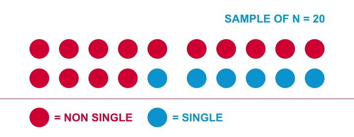
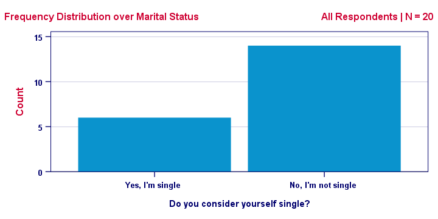
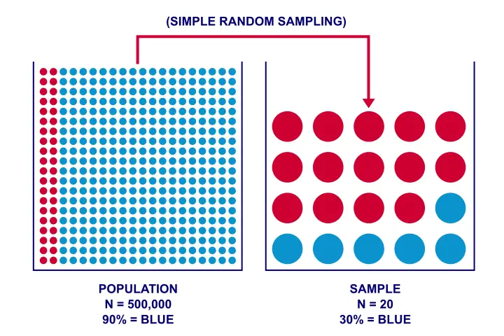
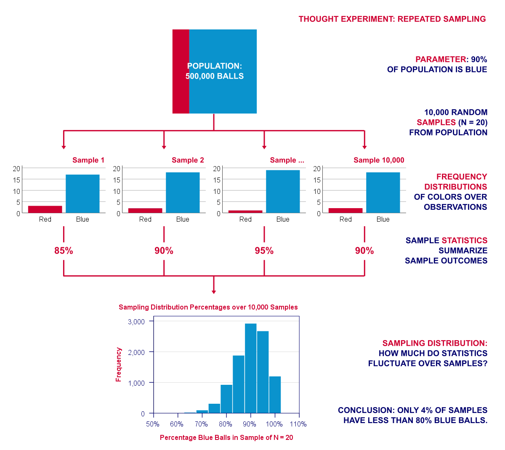
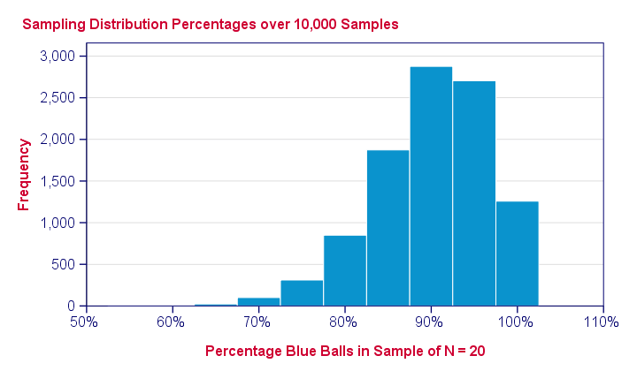
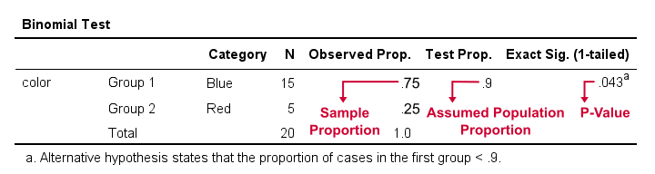

推论统计 – 快速入门
作者：Ruben Geert van den Berg，源自 Statistics A-Z
“推论统计 (Inferential Statistics)” 是统计学的一个分支，主要研究如何将从（小）样本中获得的结论推广到（大得多）的总体中。同时，“推论统计 (Inferential Statistics)” 也是 “推论统计量 (Inferential Statistic)” 的复数形式。一些关键概念包括：
- 统计显著性 (Statistical Significance) 检验；
- 置信区间 (Confidence Intervals)；
- 统计功效 (Statistical Power)；
- 零假设 (Null Hypotheses)；
- 标准误差 (Standard Errors)。
所有这些概念都旨在基于来自总体的样本数据，对总体得出结论（或 “推论”）。 基本思想是，样本统计量（如均值、相关性、比例等）可能与其总体对应值（参数）不同。然而，它们的差异方式是可以预测的，这告诉我们样本结果 可能 偏离多少。
它是如何工作的？
让我用一个简单的例子来解释基本的思路。假设海牙大约有 50 万居民。我想知道这个人群中有多少比例是单身。由于我无法询问所有 50 万人，所以我找到了 20 个人，询问他们是否认为自己是单身。结果，我在 20 人的样本中发现了 6 个单身人士和 14 个非单身人士。我将其可视化如下。

更常见的可视化此结果的方式是下面显示的频率分布 (Frequency Distribution)。请注意，它包含与上图完全相同的信息。

此图显示了我们的样本 频率 (Frequencies) 如何在我们的值上进行 分布 (Distributed)（因此称为 “频率分布”）：蓝色值的频率为 6，红色值的频率为 14。我们甚至可以将我们的结果总结为一个数字：我们的 20 位受访者中有 30% 是单身。
样本毫无价值吗？
好的，假设我的样本量 N = 20，结果是 30% 的人是单身，关于我的目标总体，即海牙的 50 万居民，我能得出什么结论（如果有的话）？
我能得出结论说 50 万居民中有 30% 是单身吗？或者也可能是 40%？或者 10%？或者 90%？实际上，任何 百分比都有可能。让我们看看为什么。
假设我有一个花瓶，里面装着 50 万个球，其中 90% (45 万) 是蓝色的。现在我从这些球中随机抽取 20 个。我能从这样的花瓶中抽出 6 个蓝色球和 14 个红色球吗？下图说明了这个想法。

正如您很容易看到的那样：我 当然可以 抽出 6 个蓝色球和 14 个红色球。我的 N = 20 个球的样本并不能让我确定地得出结论，即花瓶 不 包含 90% 的蓝色球。
现在，如果我的花瓶只包含 10% 的蓝色球呢？如果我从这个花瓶中抽出 20 个球，我能找到 6 个蓝色球吗？您可能会意识到这确实是可能的。
简而言之：如果所有球中有 10% 或 90% 是蓝色的，则有可能抽出 6 个蓝色球和 14 个红色球。它不能确定地排除任何一种可能性。因此，当涉及到对我的总体得出任何结论时，样本是毫无价值的，对吗？
不对。
思想实验：重复抽样
当然：理论上我可以从一个包含 90% 蓝色球的花瓶中抽出 6 个蓝色球和 14 个红色球。但这是 几乎不可能的：概率大约是 1/4,500,000,000。我的小样本基本上保证了总体百分比不是 90%（但可能要低得多）。
发现这一点的 一种方法是简单地尝试以下蛮力方法：
- 创建一个包含 45 万个蓝色球和 5 万个红色球的虚假数据集 (Dataset)；
- 让您的计算机从这 50 万个球中抽取 20 个；
- 计算样本中蓝色球的百分比，然后
重复此过程 10,000 次。下图可视化了这种重复抽样的思想实验。

请注意，我们的实验涉及 2 种类型的频率分布。在每个样本中，球的颜色在 观察 (Observations) 上具有频率分布。我们可以用百分比来概括它。但重点来了：这个百分比 反过来 又具有 重复样本 (Repeated Samples) 上的频率分布：抽样分布 (Sampling Distribution)。 类似地，相关性 (Correlations)、标准差 (Standard Deviations) 和许多其他统计量也具有抽样分布。这些分布很有用，因为它们可以让我们了解某个统计量可能偏离多少。这种基本推理是显著性检验 (Significance Testing) 和 置信区间 (Confidence Intervals) 的基础。
抽样分布说明了什么？

上图显示了从一个包含 90% 红色球的总体中，经过 10,000 次计算机抽样后得到的样本百分比。那么这如何帮助我们呢？它显示了在假定总体百分比的情况下，样本结果如何在样本之间波动。 它们波动不大：绝大多数（约 96%）样本百分比落在 80% 到 100% 之间。这些是可能的结果；如果我们的总体百分比确实是 90%，那么 样本应该可能包含 80% - 100% 的蓝色球。如果不是这样，那么总体百分比可能根本不是 90%。 那么，其他结果的可能性到底有多小呢？嗯，
- 在我们的 10,000 个样本中，只有 4.4% 的样本的百分比为 75% 或更低；
- 只有 0.3% 的样本的百分比为 65% 或更低；
- 最低的样本百分比为 55%（只有 1 个样本）。
统计显著性
正如我们所看到的，许多样本中有 4.4% 的样本显示有 75% 或更少的红色球。另一种说法是，一个样本有 4.4%（或 0.044）的概率包含 75% 或更少的红色球。这个概率值（p 值）通常在统计检验中被称为 “统计显著性 (Statistical Significance)”。文章通常只称其为 “p”，例如 “F(2,87) = 3.7, p = .028”。这基本上意味着，在一些假设（包括零假设）的情况下，许多样本中应该有 2.8% 的样本得出的 F 值大于或等于 3.7。 现在让我们尝试一下：我们将给 SPSS 提供一个 N = 20 的样本，其中 75% 是蓝色。现在我们将检验总体百分比 = 90% 的零假设。结果（如下所示）证实 p（用 “Exact Sig. (1-tailed)” 表示）确实非常接近 0.044。

因此，再次强调，p 值为 0.043 意味着，如果总体百分比为 90%，那么大约 4.3% 的样本应该得出 75% 或更低的百分比。一个（相当武断的）惯例是，如果 p < 0.05，我们就拒绝零假设：如果样本结果的概率小于 5%，那么这种可能性太小了，我们不再相信总体百分比是 90%。
主要抽样分布
我们看到的抽样分布 - 二项分布 (Binomial Distribution) - 在实践中并不常用。主要抽样分布 严格来说，这些不是抽样分布，而是 概率密度函数 (Probability Density Functions)。但是，为了实际目的，没有必要区分这一点。 您最常遇到的包括：
- （标准）正态分布 (Normal Distribution)；
- t 分布；
- F 分布；
- 卡方分布。

虽然它可能看起来与我们的二项分布不同，但上图传达了相同的基本信息：大约 2.5% 的重复样本应该得出 z < -1.96。也就是说，p(z < -1.96) = 0.025。
从哪里可以获得抽样分布？
早些时候，我们通过让计算机从包含某些总体的 数据集 (Dataset) 中抽取 10,000 个样本来模拟抽样分布。虽然这是一种不错且直观的方法，但我们通常不这样做。相反，许多不同统计量（均值、相关性 (Correlations)、比例等）的抽样分布已被发现并以数学方式公式化。这些公式已在许多软件（如 MS Excel、OpenOffice 和 Google Sheets）中实现。

显然，所有主要的抽样分布也已包含在统计软件（如 SPSS、Stata 和 SAS）中。这些软件包会立即为您计算 p 值和置信区间。因此，在这种情况下，您可能会完全跳过抽样分布。
最后的说明
好的，因此推论统计基本上试图展示样本结果如何在样本之间波动。如果一个统计量波动很小，那么我们可以合理地相信它接近我们所追求的总体参数。我希望这个快速教程能让您对它的工作原理有一个基本的了解。
感谢您的阅读！